Classification Algorithms in Various Situations
01. Introduction
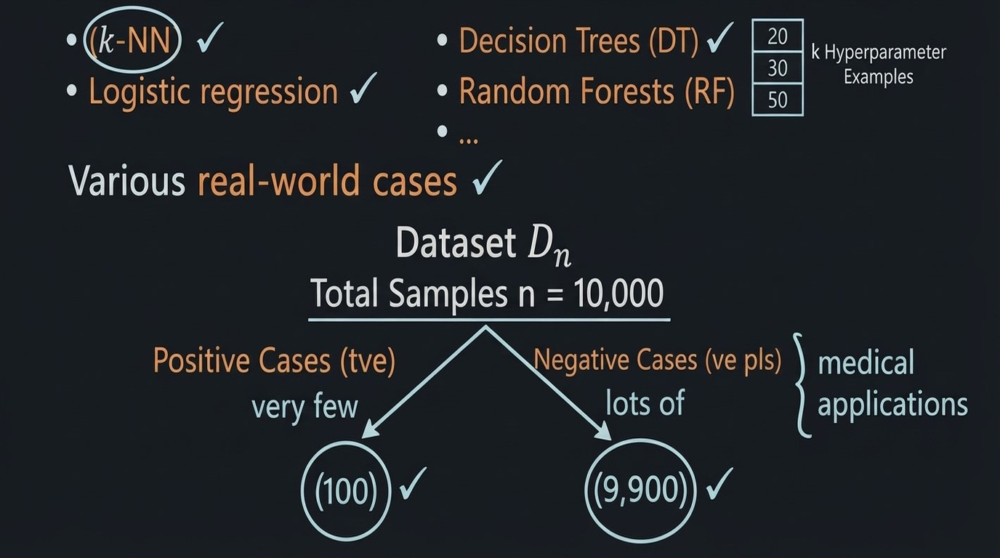
Overview
We have studied several classification algorithms:
- K-NN
- Logistic Regression
- Decision Trees (DT)
- Random Forest (RF)
- … and others
Now we look at how these algorithms behave in real-world cases, especially when the data is highly imbalanced.
Real-World Case: Imbalanced Data
In many practical problems (especially medical applications), the two classes are not equally represented.
Example:
Dataset size: $n = 10{,}000$
- Positive class ($+$ve): only 100 points (very few)
- Negative class ($-$ve): 9{,}900 points
Or even more extreme:
- Positive: 1{,}000
- Negative: 1 Million (1M)
This kind of severe class imbalance is very common in:
- Medical diagnosis (disease vs healthy)
- Fraud detection
- Rare event prediction
Key Challenge
When the positive class is extremely rare:
- A model that always predicts the majority class (negative) can achieve very high accuracy.
- But such a model is useless in practice because it never detects the rare (but important) positive cases.
This is why we need to carefully choose and evaluate classification algorithms in imbalanced settings.
02. Imbalanced vs Balanced Dataset
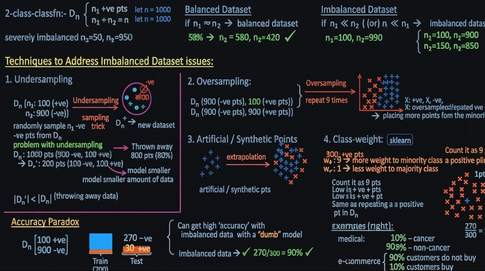
Definition
In a 2-class classification problem:
$$ D_n = { n_1 \text{ positive points},; n_2 \text{ negative points} } $$
where $n_1 + n_2 = n$.
- Balanced Dataset: $n_1 \approx n_2$
- Imbalanced Dataset: $n_1 \ll n_2$ or $n_2 \ll n_1$
Examples of Imbalance:
| Positive ($n_1$) | Negative ($n_2$) | Type |
|---|---|---|
| 580 | 420 | Slightly imbalanced |
| 100 | 900 | Imbalanced |
| 50 | 950 | Severely imbalanced |
Problem with K-NN on Imbalanced Data
When the majority class dominates (e.g., 950 negative vs 50 positive):
- K-NN uses majority vote.
- The majority class becomes the dominant class.
- Most query points will be classified as the majority class simply because most neighbors belong to it.
This is not always desirable, especially when the minority class is the important one (e.g., disease detection).
How to Work Around Imbalanced Dataset Issues
1. Undersampling
- Keep all minority class points.
- Randomly sample the same number of majority class points.
- Create a new balanced dataset $D_n'$.
Example:
- Original: 100 positive + 900 negative
- After undersampling: 100 positive + 100 negative
Problem with Undersampling:
- We throw away a large amount of data (e.g., 800 points).
- The model is trained on a much smaller dataset → information loss.
2. Oversampling
- Keep all majority class points.
- Repeat (duplicate) the minority class points multiple times until the classes become balanced.
Example:
- Original: 100 positive + 900 negative
- Repeat the 100 positive points 9 times → 900 positive + 900 negative
Visual Idea:
- We place more copies of the minority class points into the dataset.
3. Synthetic Points (Advanced Oversampling)
Instead of simply duplicating points, we can generate artificial / synthetic points by extrapolation around the existing minority class points.
This is the idea behind techniques like SMOTE.
4. Class-Weight (in sklearn)
Instead of changing the data, we can give higher weight to the minority class during training.
Example:
- 100 positive, 900 negative
-
Set
class_weight:- $w_{+} = 9$ (more weight to minority)
- $w_{-} = 1$ (less weight to majority)
In K-NN, this is equivalent to treating each positive point as if it were repeated 9 times.
Why Accuracy is Misleading on Imbalanced Data
Example:
- Dataset: 100 positive + 900 negative (ratio 1:9)
- Train: 700 points (630 negative, 70 positive)
- Test: 300 points (270 negative, 30 positive)
A dumb model that always predicts “negative” achieves:
$$ \text{Accuracy} = \dfrac{270}{300} = 90% $$
This looks excellent, but the model never detects any positive case → completely useless in practice.
Real-World Examples of Imbalanced Data
| Domain | Minority Class | Majority Class |
|---|---|---|
| Medical | Cancer (10%) | Non-Cancer (90%) |
| E-Commerce | Customers who buy (10%) | Customers who do not buy (90%) |
Summary of Solutions
| Method | Idea | Drawback / Note |
|---|---|---|
| Undersampling | Reduce majority class | Throws away data |
| Oversampling | Duplicate minority class | Can cause overfitting |
| Synthetic points | Generate new minority points | Better than simple duplication |
| Class-weight | Give higher weight to minority | No change to data size |
Key Takeaway:
Never rely only on accuracy when the dataset is imbalanced. Always look at metrics that
focus on the minority class (Precision, Recall, F1-score, etc.).
03. Multi-Class Classification
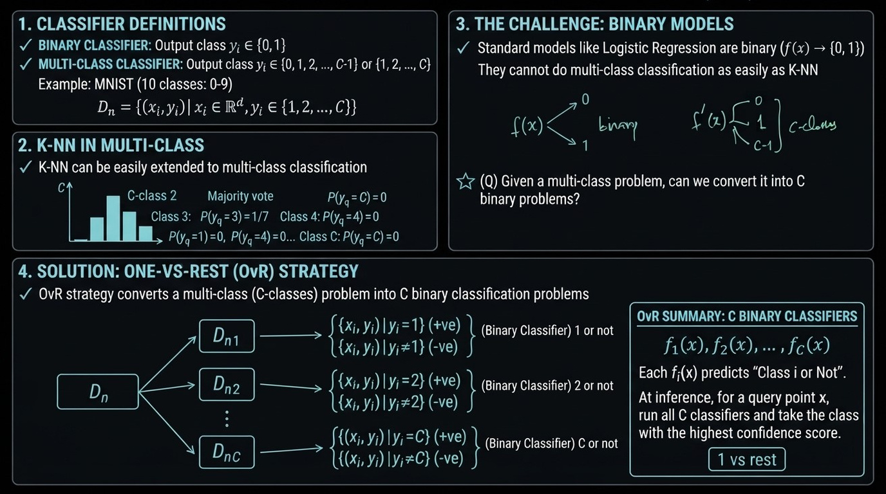
Binary vs Multi-Class
-
Binary Classifier:
$y_i \in {0, 1}$ -
Multi-Class Classifier:
$y_i \in {0, 1, 2, \dots, 9}$
(Example: MNIST digit classification → 10 classes)
In general, for a $c$-class problem:
$$ D_n = \big{ (x_i, y_i) ;\big|; x_i \in \mathbb{R}^d,; y_i \in {1, 2, 3, \dots, c} \big} $$
K-NN for Multi-Class Classification
K-NN extends very easily to multi-class problems.
Example (7-NN):
For a query point $x_q$, the 7 nearest neighbors belong to classes:
| Class | Count |
|---|---|
| 1 | 0 |
| 2 | 6 |
| 3 | 1 |
| … | 0 |
-
Majority Vote → Predict class 2
($y_q = 2$) -
Probabilistic Classifier:
$$ P(y_q = 2) = \dfrac{6}{7}, \quad P(y_q = 3) = \dfrac{1}{7}, \quad P(y_q = 1) = 0,; \dots $$
Logistic Regression and Multi-Class
Logistic Regression is fundamentally a binary classifier.
It cannot directly handle multi-class problems the way K-NN can.
Question:
Given a multi-class classification problem, can we convert it into binary classification
problems?
One-vs-Rest (OvR) Strategy
Yes. We can reduce a $c$-class problem into $c$ binary classification problems.
Idea:
For each class $k = 1$ to $c$:
- Treat class $k$ as the positive class
- Treat all other classes as the negative class
-
Train a binary classifier $f_k(x)$ that answers:
“Is this point class $k$ or not?”
Result:
We obtain $c$ binary classifiers:
$$ \begin{align*} f_1(x) &\rightarrow \text{Class 1 or not} \ f_2(x) &\rightarrow \text{Class 2 or not} \ &\vdots \ f_c(x) &\rightarrow \text{Class } c \text{ or not} \end{align*} $$
This approach is called One-vs-Rest (also known as One-vs-All).
Summary
| Algorithm | Multi-class Support | How? |
|---|---|---|
| K-NN | Native | Majority vote / probabilities |
| Logistic Regression | Needs conversion | One-vs-Rest (OvR) |
One-vs-Rest is a standard and widely used technique to extend any binary classifier to multi-class problems.
04. k-NN, Given a Distance or Similarity Matrix
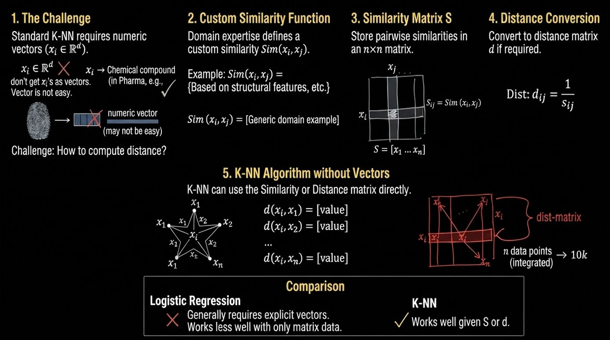
The Standard Assumption
In normal classification, we assume:
$$ x_i \in \mathbb{R}^d $$
i.e., every data point is available as a numeric feature vector.
Real-World Situation Where Vectors Are Hard
Sometimes it is not easy (or not natural) to represent the data as numeric vectors.
Example (Pharmaceutical / Chemical domain):
- Each $x_i$ is a chemical compound (e.g., Paracetamol).
- Converting a chemical structure into a fixed-length numeric vector is non-trivial.
- However, domain experts (pharmacists / chemists) can easily define a similarity between two compounds:
$$ \text{Sim}(x_i, x_j) $$
Similarity Matrix / Distance Matrix
When we have $n$ data points, we can construct an $n \times n$ Similarity Matrix $S$:
$$ S_{ij} = \text{Sim}(x_i, x_j) $$
We can convert similarity into distance:
$$ d_{ij} = \dfrac{1}{S_{ij}} $$
(or any other decreasing transformation).
K-NN Works Directly with Similarity or Distance Matrix
K-NN does not require the original feature vectors $x_i \in \mathbb{R}^d$.
It only needs:
- Either the Similarity Matrix $S$, or
- The Distance Matrix $D$
Given any query point, we can still find its $K$ nearest neighbors using the precomputed distances/similarities and apply majority vote (or probabilistic prediction).
Comparison with Other Algorithms
| Algorithm | Needs explicit feature vectors $x_i \in \mathbb{R}^d$? | Works with only Similarity / Distance Matrix? |
|---|---|---|
| K-NN | No | Yes (works very well) |
| Logistic Regression | Yes | No |
| Most other models | Yes | No |
Key Takeaway
K-NN is extremely flexible:
- It only needs a notion of distance or similarity between points.
- It does not require the points to be embedded in a Euclidean vector space.
- This makes it useful in domains (chemistry, biology, graphs, text, etc.) where defining a good feature vector is hard, but defining a similarity is natural.
05. Train and Test Set Differences
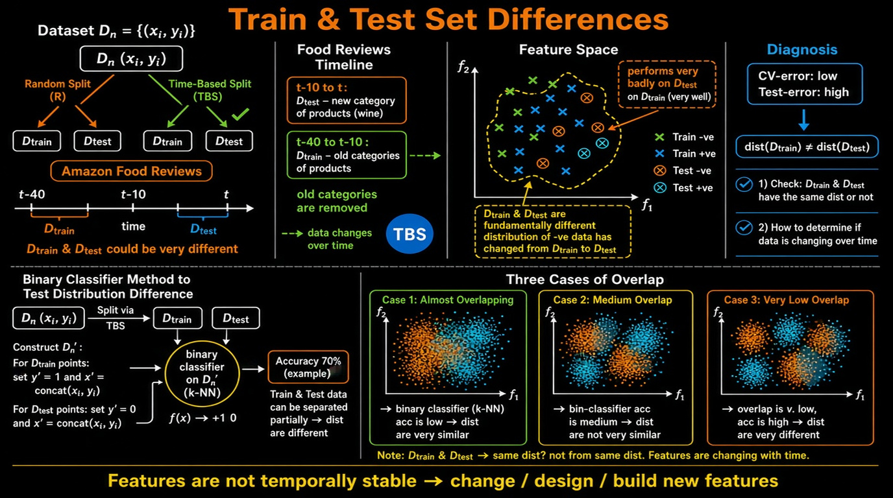
Random Split vs Time-Based Split (TBS)
When we split $D_n$ into $D_{\text{Train}}$ and $D_{\text{Test}}$:
- Random Split (R): Points are randomly assigned → Train and Test usually come from the same distribution.
- Time-Based Split (TBS): Older data → Train, newer data → Test.
Example: Amazon Food Reviews
- Train: reviews from $t-40$ to $t-10$
- Test: reviews from $t-10$ to $t$
Over time:
- Old product categories may be removed
- New categories (e.g., Wine) may appear
- Language, preferences, and product distribution can change
→ $D_{\text{Train}}$ and $D_{\text{Test}}$ can become very different.
Consequence of Distribution Shift
If the distribution of data changes significantly:
- A model (e.g., K-NN) that performs very well on $D_{\text{Train}}$
- Can perform very badly on $D_{\text{Test}}$
This happens because the decision boundary learned on Train no longer matches the Test distribution.
Symptom:
- CV error → Low
- Test error → High
How to Check if Train and Test Have Different Distributions
Idea: Convert the problem into a binary classification task.
-
Create a new dataset $D_n'$:
- All points from $D_{\text{Train}}$ get label $y' = 1$
- All points from $D_{\text{Test}}$ get label $y' = 0$
- Features $x'$ can be the original features (or concatenated features)
-
Train a binary classifier (e.g., K-NN) on $D_n'$ to distinguish Train vs Test.
Look at the accuracy of this binary classifier:
| Case | Overlap between Train & Test | Binary Classifier Accuracy | Conclusion |
|---|---|---|---|
| 1 | Almost overlapping | Low | Distributions are very similar |
| 2 | Medium overlap | Medium | Distributions are somewhat different |
| 3 | Very low overlap | High | Distributions are very different |
Interpretation:
- If the binary classifier can easily separate Train from Test (high accuracy) → the two sets come from different distributions.
- If it cannot separate them well (accuracy near random) → the distributions are similar.
What to Do When Distributions Differ
If features are not temporally stable (they change over time):
- We need to change / redesign / build new features that are more robust to temporal shifts.
Key Takeaway
When using Time-Based Splitting (common in real-world systems):
- Always check whether $D_{\text{Train}}$ and $D_{\text{Test}}$ come from the same distribution.
- A simple binary classifier that tries to distinguish Train vs Test is a practical diagnostic tool.
- High accuracy of this classifier is a warning sign of distribution shift.
06. Impact of Outliers
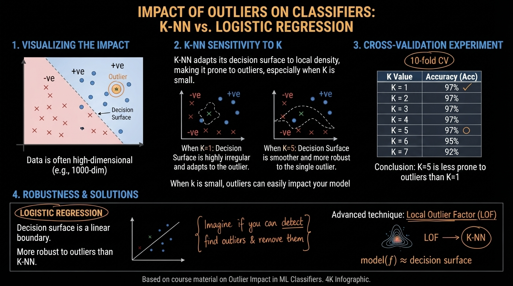
What is an Outlier?
An outlier is a data point that lies far away from the majority of the points of its class.
Effect on Models
The model $f$ roughly corresponds to the decision surface.
-
Logistic Regression:
Relatively robust. A few outliers usually do not drastically change the decision boundary. -
K-NN:
More prone to outliers, especially when $K$ is small.
Why K-NN is Sensitive to Outliers
When $K$ is small (particularly $K=1$):
- The prediction for a query point is completely determined by its nearest neighbor(s).
- A single outlier can create a small “island” of the wrong class in the decision surface.
- This leads to overfitting and poor generalization.
Rule of thumb:
- Smaller $K$ → more sensitive to outliers
- Larger $K$ → more robust to outliers (but can underfit)
Evidence from Cross-Validation
Using 10-fold CV:
| $K$ | Accuracy |
|---|---|
| 1 | 97% |
| 2 | 97% |
| 3 | 97% |
| 4 | 97% |
| 5 | 97% |
| 6 | 95% |
| 7 | 92% |
Even though $K=1$ to $K=5$ give similar accuracy,
$K=5$ is less prone to outliers than $K=1$.
What If We Can Detect Outliers?
If we can reliably detect and remove outliers before training:
- The negative impact on K-NN can be greatly reduced.
One common technique for detecting outliers is based on Local Outlier Factor (LOF), which itself uses the idea of K-NN (local density comparison).
Key Takeaway
- K-NN with small $K$ is highly sensitive to outliers.
- Prefer moderately larger $K$ when outliers are present.
- Outlier detection and removal (or robust distance measures) can improve K-NN performance.
07. Local Outlier Factor (Simple Solution: Mean Distance to k-NN)
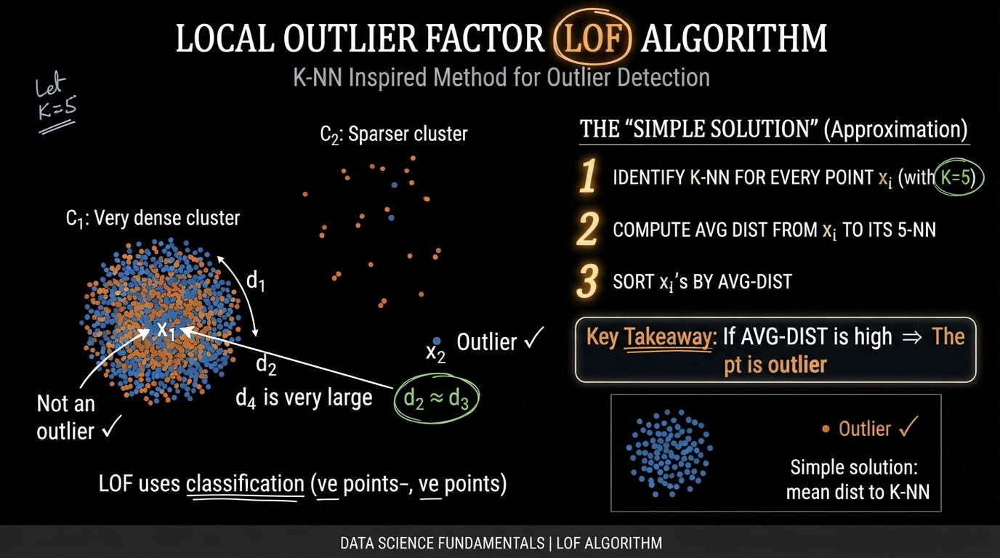
Purpose
Local Outlier Factor (LOF) is a method to
detect outliers.
It is heavily inspired by the idea of K-Nearest Neighbors.
Intuition
Consider two clusters:
- $C_1$: Very dense cluster
- $C_2$: Sparser cluster
And two points:
- $x_1$: Lies near the dense cluster $C_1$ → not an outlier
- $x_2$: Lies far from both clusters → outlier
Even if the absolute distance of $x_1$ to its neighbors is small and the distance of $x_2$ is large, the key idea is to look at local density.
Simple Solution (Basic Idea)
Let $K = 5$.
For every point $x_i$:
- Find its $K$ nearest neighbors.
- Compute the average distance from $x_i$ to its $K$ nearest neighbors.
- Sort all points by this average distance.
- Points with very high average distance are considered outliers.
This simple approach already captures the idea of local density.
Local Density
- Dense region → small average distance to $K$-NN
- Sparse region / outlier → large average distance to $K$-NN
LOF formalizes this idea more carefully by comparing the local density of a point with the local densities of its neighbors.
Key Takeaway
- LOF is a K-NN inspired outlier detection technique.
- It looks at how isolated a point is relative to its local neighborhood.
-
A simple practical version:
- Compute mean distance to $K$ nearest neighbors for every point.
- Points with the largest mean distances are the strongest outlier candidates.
08. k-Distance
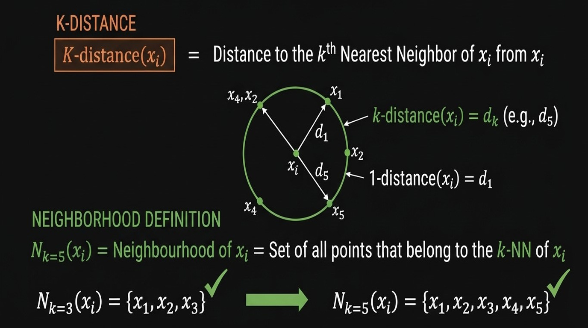
1. K-distance
$$ \text{K-distance}(x_i) = \text{distance to the } K^{\text{th}} \text{ nearest neighbor of } x_i $$
Example:
- If $K = 5$, then 5-distance$(x_i) = d_5$ (distance to the 5th nearest neighbor)
- 1-distance$(x_i) = d_1$ (distance to the nearest neighbor)
2. Neighborhood of a Point
$$ N_K(x_i) = \text{Set of all points that belong to the } K\text{-nearest neighbors of } x_i $$
Notation:
- $N_{K=3}(x_i) = {x_1, x_2, x_3}$
- $N_{K=5}(x_i) = {x_1, x_2, x_3, x_4, x_5}$
Visual Intuition
For a point $x_i$:
- Draw a circle centered at $x_i$ that just reaches its $K$-th nearest neighbor.
- All points lying inside or on this circle form the neighborhood $N_K(x_i)$.
- The radius of this circle is exactly the K-distance of $x_i$.
These two quantities (K-distance and the neighborhood set) are the basic building blocks used to compute local density and eventually the Local Outlier Factor.
09. Reachability-Distance (A, B)
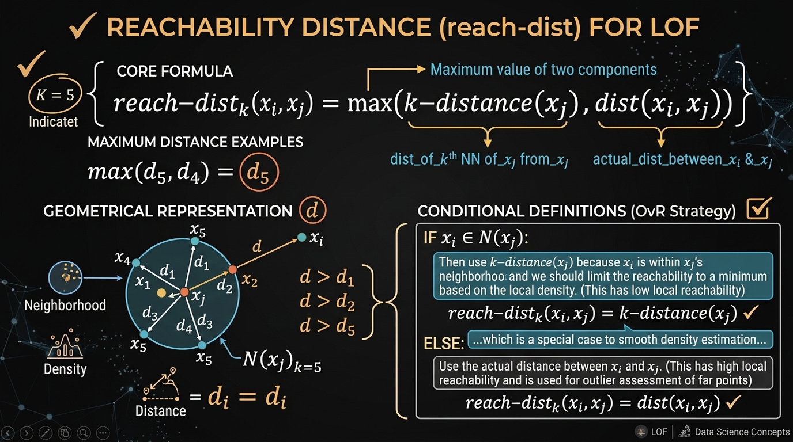
Definition
The reachability distance of a point $x_i$ with respect to a point $x_j$ is defined as:
$$ \text{reachability-distance}_K(x_i, x_j) = \max\big( \text{K-distance}(x_j),; \text{dist}(x_i, x_j) \big) $$
Where:
- $\text{K-distance}(x_j)$ = distance from $x_j$ to its $K$-th nearest neighbor
- $\text{dist}(x_i, x_j)$ = actual Euclidean (or other) distance between $x_i$ and $x_j$
Intuition
-
If $x_i$ is inside the $K$-neighborhood of $x_j$ (i.e., $x_i \in N_K(x_j)$),
then the reachability distance is simply the K-distance of $x_j$. -
If $x_i$ is outside the $K$-neighborhood of $x_j$,
then the reachability distance is the actual distance $\text{dist}(x_i, x_j)$.
In other words:
$$ \text{reach-dist}_K(x_i, x_j) = \begin{cases} \text{K-distance}(x_j) & \text{if } x_i \in N_K(x_j) \ \text{dist}(x_i, x_j) & \text{otherwise} \end{cases} $$
Why This Definition?
This “smoothing” effect prevents points that are very close to $x_j$ from having
artificially small reachability distances.
It makes the density estimate more stable.
Visual Example ($K=5$)
- Circle around $x_j$ has radius = 5-distance$(x_j) = d_5$
-
For a point $x_i$ outside this circle:
$\text{reach-dist}(x_i, x_j) = \text{dist}(x_i, x_j) = d$ -
For a point inside the circle:
$\text{reach-dist}(x_i, x_j) = d_5$
10. Local Reachability-Density (A)
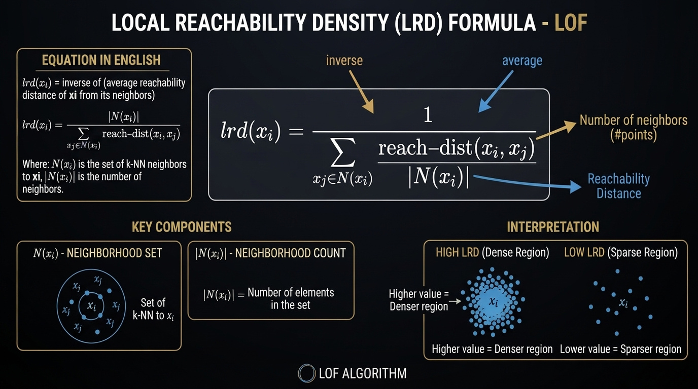
Definition
The Local Reachability Density ( lrd ) of a point $x_i$ is
defined as:
$$ \text{lrd}(x_i) = \dfrac{|N(x_i)|}{\displaystyle\sum_{x_j \in N(x_i)} \text{reach-dist}(x_i, x_j)} $$
Where:
- $N(x_i)$ = set of $K$-nearest neighbors of $x_i$
- $|N(x_i)|$ = number of points in the neighborhood
- $\text{reach-dist}(x_i, x_j)$ = reachability distance of $x_i$ with respect to $x_j$
English Interpretation
$$ \text{lrd}(x_i) = \text{inverse of the average reachability distance of } x_i \text{ from its neighbors} $$
In short:
$$ \text{lrd}(x_i) \propto \dfrac{1}{\text{average reach-dist of } x_i} $$
Intuition
- If the average reachability distance from $x_i$ to its neighbors is small → the point is in a dense region → high lrd.
- If the average reachability distance is large → the point is in a sparse region → low lrd.
Visual Idea
- Dense cluster → small average reach-dist → high local reachability density
- Sparse region / outlier → large average reach-dist → low local reachability density
This local density estimate is the key quantity used in the final LOF score.
11. Local Outlier Factor (A)
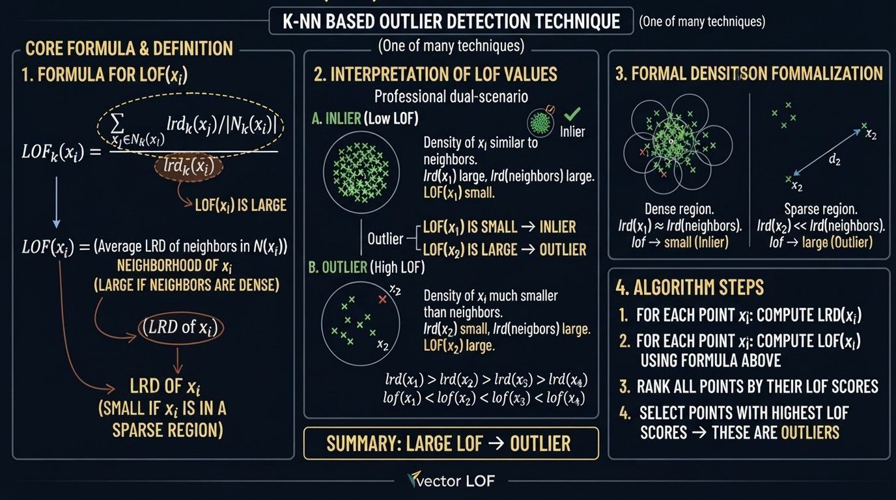
https://en.wikipedia.org/wiki/Local_outlier_factor
LOF.ipynb
https://scikit-learn.org/stable/auto_examples/neighbors/plot_lof_outlier_detection.html
https://scikit-learn.org/stable/modules/generated/sklearn.neighbors.LocalOutlierFactor.html
Definition
The Local Outlier Factor of a point $x_i$ is defined as:
$$ \text{LOF}(x_i) = \dfrac{\displaystyle\sum_{x_j \in N(x_i)} \text{lrd}(x_j)}{|N(x_i)|} ;\bigg/; \text{lrd}(x_i) $$
In other words:
$$ \text{LOF}(x_i) = \dfrac{\text{average lrd of the neighbors of } x_i}{\text{lrd of } x_i} $$
Interpretation
| LOF Value | Meaning | Conclusion |
|---|---|---|
| LOF$(x_i)$ is large | Density of $x_i$ is much smaller than the density of its neighbors | Outlier |
| LOF$(x_i)$ is small (≈ 1) | Density of $x_i$ is similar to the density of its neighbors | Inlier |
Visual Understanding
- Points inside a dense cluster ($C_1$ or $C_2$) → LOF ≈ 1 (small) → inliers
- Points lying far away from clusters → LOF ≫ 1 (large) → outliers
Examples:
- $x_1 \in C_1$ → LOF small
- $x_2$ (isolated) → LOF large → outlier
- $x_3 \in C_2$ → LOF small
- $x_4$ (isolated) → LOF large → outlier
How to Use LOF in Practice
- For every point $x_i$, compute LOF$(x_i)$.
- Sort the points in decreasing order of LOF.
- The points with the highest LOF scores are the strongest outliers.
Summary of the LOF Pipeline
| Step | Quantity | Meaning |
|---|---|---|
| 1 | K-distance$(x_i)$ | Distance to the $K$-th nearest neighbor |
| 2 | $N_K(x_i)$ | Set of $K$ nearest neighbors |
| 3 | reach-dist$(x_i, x_j)$ | max(K-distance$(x_j)$, dist$(x_i,x_j)$) |
| 4 | lrd$(x_i)$ | Inverse of average reachability distance |
| 5 | LOF$(x_i)$ | Ratio of average neighbor lrd to own lrd |
Final Note
LOF is a powerful K-NN inspired outlier detection technique.
There are many other outlier detection methods, but LOF is one of the most popular
density-based approaches.
12. Impact of Scale & Column Standardization
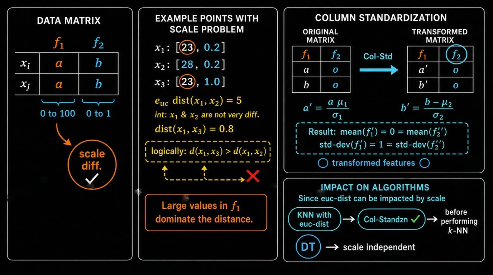
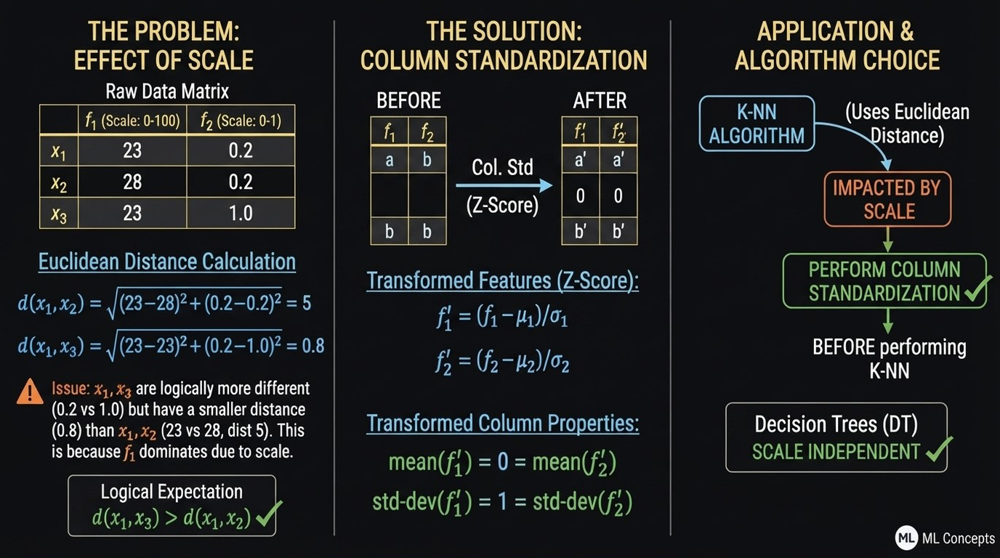
Why Scale Matters
Features often have very different scales.
Example:
| Point | $f_1$ (0–100) | $f_2$ (0–1) |
|---|---|---|
| $x_1$ | 23 | 0.2 |
| $x_2$ | 28 | 0.2 |
| $x_3$ | 23 | 1.0 |
Euclidean distances:
$$ \text{dist}(x_1, x_2) = 5 $$
$$ \text{dist}(x_1, x_3) = 0.8 $$
Problem:
Logically, $x_1$ and $x_2$ are very similar (only $f_1$ differs by 5 on a 0–100 scale),
while $x_1$ and $x_3$ differ significantly in $f_2$.
But because of the scale difference, the distance calculation is dominated by $f_1$.
Column Standardization
To remove the effect of different scales, we apply Column Standardization (also called Z-score normalization):
For each feature $f_j$:
$$ a' = \dfrac{a - \mu_j}{\sigma_j} $$
After transformation:
- Mean of each feature = 0
- Standard deviation of each feature = 1
Importance for K-NN
- Euclidean distance is highly sensitive to feature scale.
- Therefore, always perform Column Standardization before applying K-NN (when using Euclidean distance).
Comparison with Other Algorithms
| Algorithm | Sensitive to Feature Scale? | Recommendation |
|---|---|---|
| K-NN (Euclidean) | Yes | Must do Column Standardization |
| Decision Trees (DT) | No | Scale-independent |
| Random Forest | No | Scale-independent |
Key Takeaway
Whenever you use a distance-based algorithm (especially K-NN with Euclidean distance), always standardize the features first so that no single feature dominates the distance calculation because of its scale.
13. Interpretability
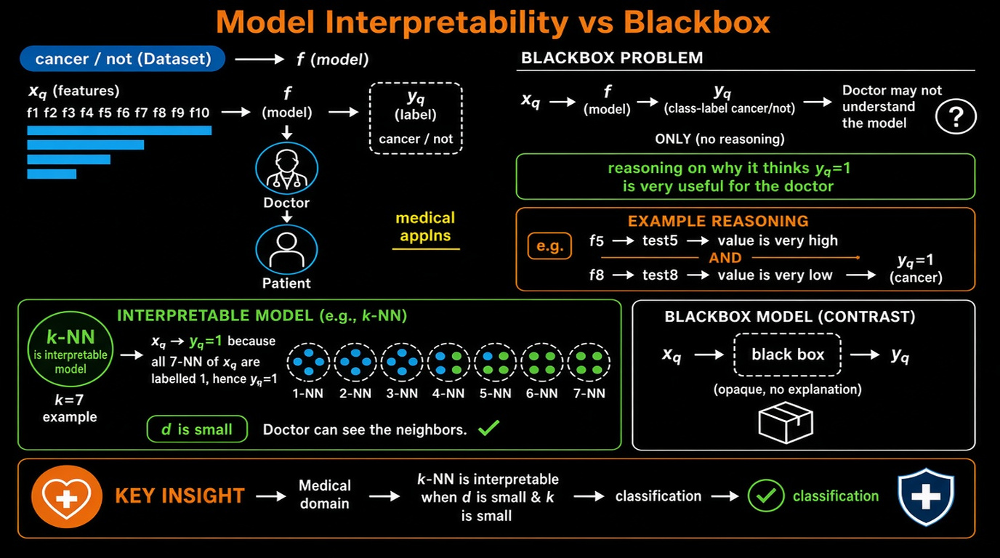
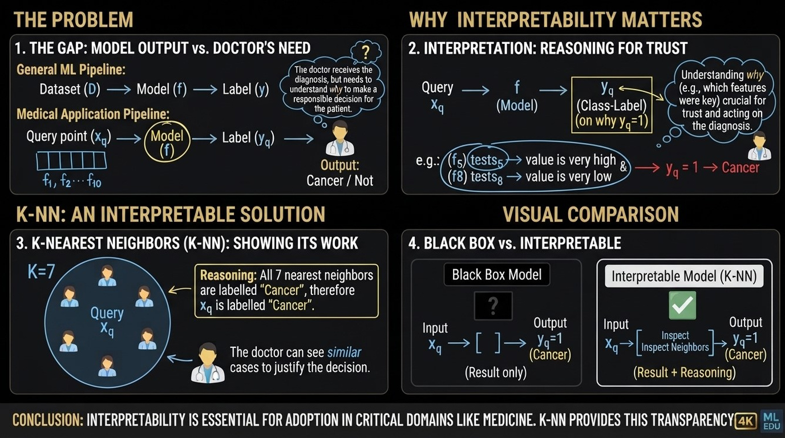
Model Interpretability vs Black-box Models
The Medical Scenario
In medical applications (e.g., Cancer / Not Cancer):
- We train a model $f$ on a dataset $D$.
- For a new patient (query $x_q$ with features $f_1, f_2, \dots, f_{10}$), the model predicts a label $y_q$.
- The prediction is given to the doctor, who then communicates with the patient.
Why Interpretability Matters
If the model only outputs a class label (Cancer / Not Cancer) without any reasoning, the doctor may not trust or understand the decision.
What doctors really need:
Reasoning on why the model thinks $y_q = 1$ (Cancer).
Example of useful reasoning:
- Feature $f_5$ (Test 5) value is very high
-
Feature $f_8$ (Test 8) value is very low
→ Therefore the model predicts Cancer.
This kind of explanation is extremely valuable in high-stakes domains.
Interpretable Model vs Black-box Model
| Type | Example | Can we understand the decision? | Typical Behavior |
|---|---|---|---|
| Interpretable Model | K-NN | Yes | We can see the neighbors |
| Black-box Model | Deep Neural Networks, complex ensembles | No (or very hard) | Just input → output |
Why K-NN is Interpretable
K-NN is an interpretable model, especially when:
- Dimensionality $d$ is small, and
- $K$ is small
Example ($K=7$):
- Query point $x_q$
- All 7 nearest neighbors are labeled 1
- Therefore $y_q = 1$
The doctor can actually look at the 7 nearest patients and understand why the prediction was made.
Key Takeaway for Medical Domain
- K-NN is particularly useful in medical applications because it is interpretable when $d$ and $K$ are small.
- Interpretability allows doctors to verify and trust the model’s decisions.
- Black-box models may achieve higher accuracy but often lack the transparency required in critical domains.
14. Feature Importance and Forward Feature Selection
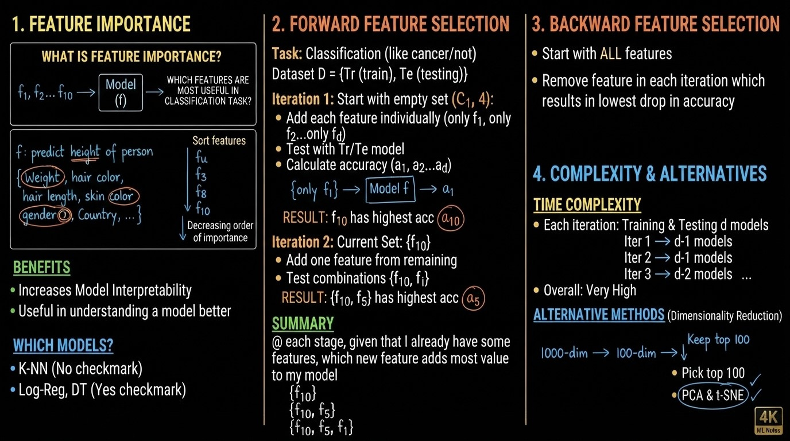
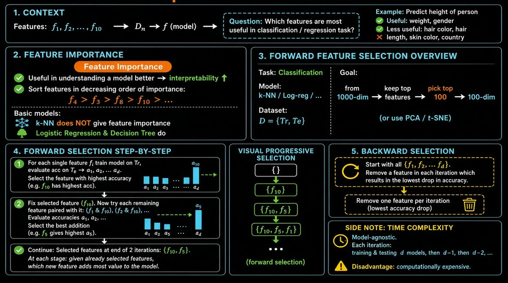
What is Feature Importance?
Given a dataset with features $f_1, f_2, \dots, f_{10}$ and a model $f$:
Question: Which features are most useful for the classification / regression task?
Example: Predicting height of a person
Possible features: Weight, Hair color, Hair length, Skin color, Gender, Country, …
Feature Importance helps us:
- Understand the model better
- Increase interpretability
- Rank features in decreasing order of importance
Note:
Basic K-NN does not provide feature importance directly.
Models like Logistic Regression and Decision Trees do.
Forward Feature Selection
Goal: Select a small subset of the most useful features.
Setting:
- Task: Classification
- Model: K-NN / Logistic Regression / …
- Data: $D = {Train, Test}$
High-level idea (especially useful when $d$ is large, e.g. 1000-dim):
- Discard most features
- Keep only the top useful ones (e.g. top 100)
- Can be combined with PCA / t-SNE later
How Forward Selection Works
Step 1: Find the single best feature
- Train a model using only $f_1$ → get accuracy $a_1$ on Test
- Train using only $f_2$ → get accuracy $a_2$
- …
- Train using only $f_d$ → get accuracy $a_d$
Pick the feature with the highest accuracy.
Suppose $f_{10}$ has the highest accuracy → select $f_{10}$.
Step 2: Add the next best feature
Now we already have ${f_{10}}$.
- Try adding $f_1$ → train on ${f_1, f_{10}}$ → accuracy $a_1$
- Try adding $f_2$ → train on ${f_2, f_{10}}$ → accuracy $a_2$
- …
- Try adding each remaining feature
Pick the feature that gives the highest accuracy when added.
Suppose $f_5$ is the best → now selected set = ${f_{10}, f_5}$
Step 3: Repeat
Continue adding one feature at a time, always choosing the feature that improves the model the most, given the features already selected.
At each stage the question is:
Given that I already have some features, which new feature adds the most value to my model?
Backward Feature Selection
Opposite of Forward Selection:
- Start with all features ${f_1, f_2, \dots, f_d}$
- In each iteration, remove the feature whose removal causes the lowest drop in accuracy
- Continue until the desired number of features remains
Time Complexity
Forward / Backward selection is model-agnostic but expensive:
In each iteration we need to train and test multiple models:
- Iteration 1 → train $d$ models
- Iteration 2 → train $d-1$ models
- Iteration 3 → train $d-2$ models
- …
Total number of models trained ≈ $\dfrac{d(d+1)}{2}$
Summary
| Method | Direction | Key Idea | Cost |
|---|---|---|---|
| Forward Selection | Start empty → add | Greedily add the most useful feature | High |
| Backward Selection | Start full → remove | Greedily remove the least useful feature | High |
| Feature Importance | Model-dependent | Rank features by how much they help the model | Depends on model |
These techniques help us build simpler, more interpretable, and often better-generalizing models by removing irrelevant or redundant features.
15. Handling Categorical and Numerical Features
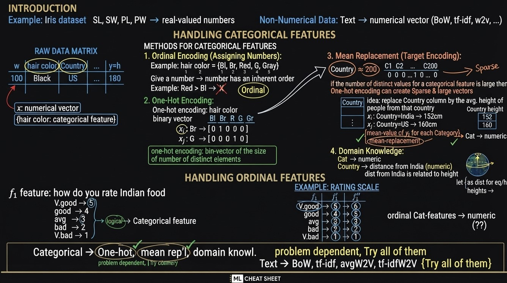
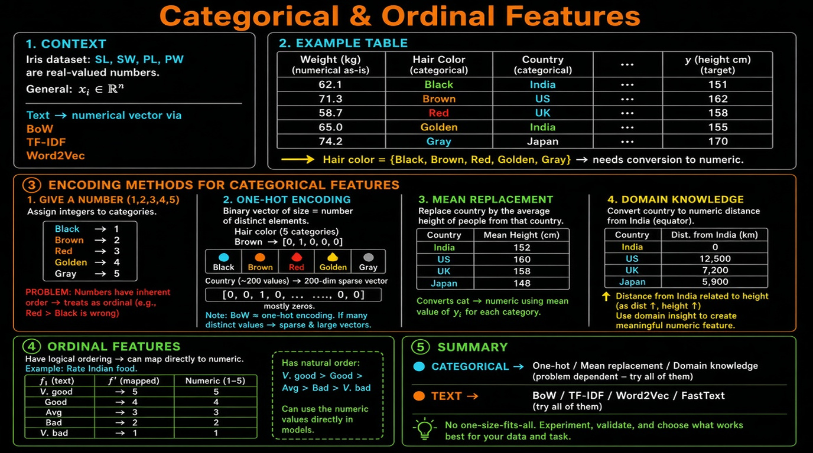
Background
In many datasets (e.g. Iris), features are real-valued numbers (SL, SW, PL, PW).
But real-world data often contains:
- Categorical features (e.g. Hair color, Country)
- Ordinal features (e.g. Rating: Very Good → Very Bad)
- Text (which we convert to numerical vectors using BoW, TF-IDF, Word2Vec, etc.)
Most ML models expect $x_i \in \mathbb{R}^d$ (numerical vectors).
So we need ways to convert categorical / ordinal features into numbers.
Example
Predicting height ($y$ = height):
| Weight | Hair Color | Country | … | Height |
|---|---|---|---|---|
| 100 | Black | US | … | 180 |
- Weight → already numerical → keep as-is
-
Hair Color → categorical feature
Possible values: {Black, Brown, Red, Golden, Gray}
Ways to Handle Categorical Features
1. Give a Number (Label Encoding)
Assign numbers: Black=1, Brown=2, Red=3, Golden=4, Gray=5
Problem:
Numbers have an inherent order (Red > Black), but hair colors have
no natural order.
This is wrong for pure categorical features → creates false ordinal relationship.
2. One-Hot Encoding
Create a binary vector of size = number of distinct categories.
Hair Color = {Bl, Br, Red, G, Gray}
- Black → [1, 0, 0, 0, 0]
- Brown → [0, 1, 0, 0, 0]
- Golden → [0, 0, 0, 1, 0]
Definition:
One-hot encoding = binary vector of the size of the number of distinct elements.
Issue when number of categories is large:
- Country ≈ 200 values → 200-dimensional sparse vector
- Creates very sparse and high-dimensional data
- Similar to Bag-of-Words
3. Mean Replacement (Target Encoding)
Idea: Replace the categorical value by the average value of the target for that category.
Example (predicting height):
- Country = India → average height of people from India = 152 cm
- Country = US → average height of people from US = 160 cm
Now the feature becomes numerical.
This is also called mean encoding or target encoding.
4. Domain Knowledge
Convert categorical feature into a meaningful numerical feature using domain knowledge.
Example:
- Country → Distance from India (or from equator)
- Distance from equator is related to height (people farther from equator tend to be taller)
Ordinal Features
Features that have a natural order.
Example:
“How do you rate Indian food?”
| Rating | Numeric Code |
|---|---|
| Very Good | 5 |
| Good | 4 |
| Average | 3 |
| Bad | 2 |
| Very Bad | 1 |
Because there is a logical ordering, we can directly convert them to numbers.
Summary of Strategies
| Feature Type | Common Techniques | Notes |
|---|---|---|
| Categorical | One-Hot Encoding, Mean Replacement, Domain Knowledge | Try all; problem-dependent |
| Ordinal | Label Encoding (ordered numbers) | Preserves natural order |
| Text | BoW, TF-IDF, Word2Vec, Avg Word2Vec, TF-IDF weighted Word2Vec | Try all of them |
Key Advice:
There is no single best method.
The choice is problem-dependent — always experiment with multiple
encodings and see what works best for your data and model.
16. Handling Missing Values by Imputation
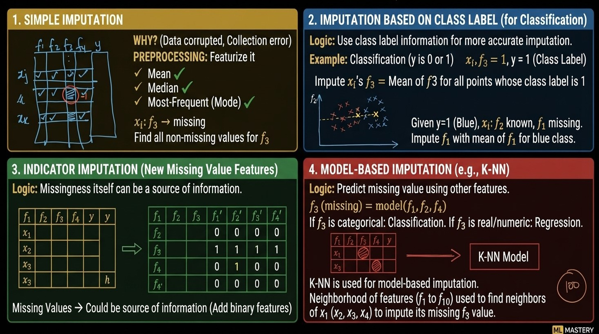
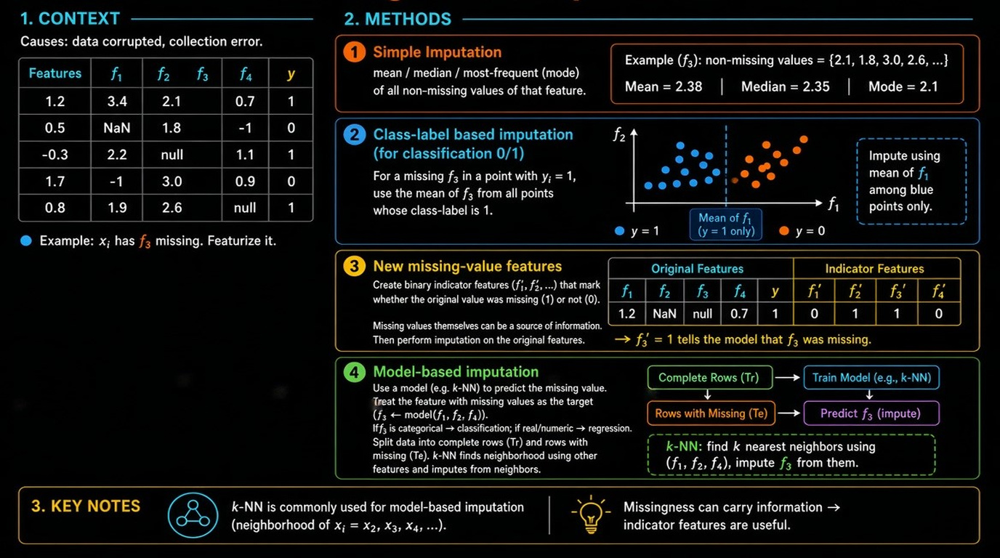
https://scikit-learn.org/stable/api/sklearn.impute.html
Why Do Missing Values Occur?
- Data corruption
- Collection errors
- Sensor failures, user skipping questions, etc.
Missing values are usually represented as:
- NaN
- null
- -1
- or simply blank
Common Imputation Techniques
1. Simple Statistical Imputation
Replace the missing value with a statistic computed from the non-missing values of that feature:
- Mean
- Median
- Most frequent value (Mode)
Example:
If $x_i$ has $f_3$ missing → fill it with the mean / median / mode of all non-missing
values of $f_3$.
2. Class-label based Imputation (for Classification)
When the task is classification ($y \in {0,1}$):
- Look at the class label of the point that has the missing value.
- Impute using only the points that belong to the same class.
Example:
$x_i$ has $f_3$ missing and $y_i = 1$
→ Fill $f_3$ with the mean of $f_3$ computed only on points whose class label is 1.
This often works better than global mean/median because the distribution of a feature can be different across classes.
3. Create New “Missing Value” Indicator Features
Missingness itself can be informative.
Idea:
-
For every feature that has missing values, create a new binary feature:
- 1 → value was missing
- 0 → value was present
- Then perform normal imputation on the original feature.
This way the model can learn whether “the fact that the value is missing” carries predictive signal.
4. Model-based Imputation
Treat the feature with missing values as the target and use the other features to predict it.
Steps:
- Take all points where the feature is not missing → Train set
- Take points where the feature is missing → Test set
- Train a model (very commonly K-NN) to predict the missing feature using the other features.
- Use the trained model to fill the missing values.
- If the feature is categorical → use classification
- If the feature is numerical → use regression
Why K-NN is popular for this:
- It finds the nearest neighbors of the point (using the other features)
- Then uses the values of those neighbors to impute the missing feature
Summary of Techniques
| Method | Idea | When useful |
|---|---|---|
| Mean / Median / Mode | Simple statistic | Quick baseline |
| Class-label based | Impute using same class only | Classification problems |
| Missing indicator features | Add binary flags for missingness | When missingness itself is informative |
| Model-based (K-NN etc.) | Predict missing value from other features | More accurate, especially with correlated features |
Practical Advice:
Always try multiple imputation strategies and evaluate their impact on the final model
performance. There is no universally best method.
17. Curse of Dimensionality
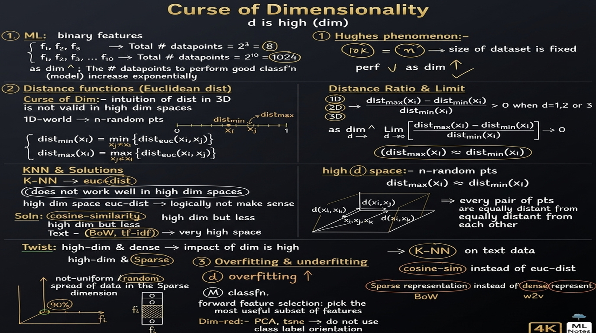
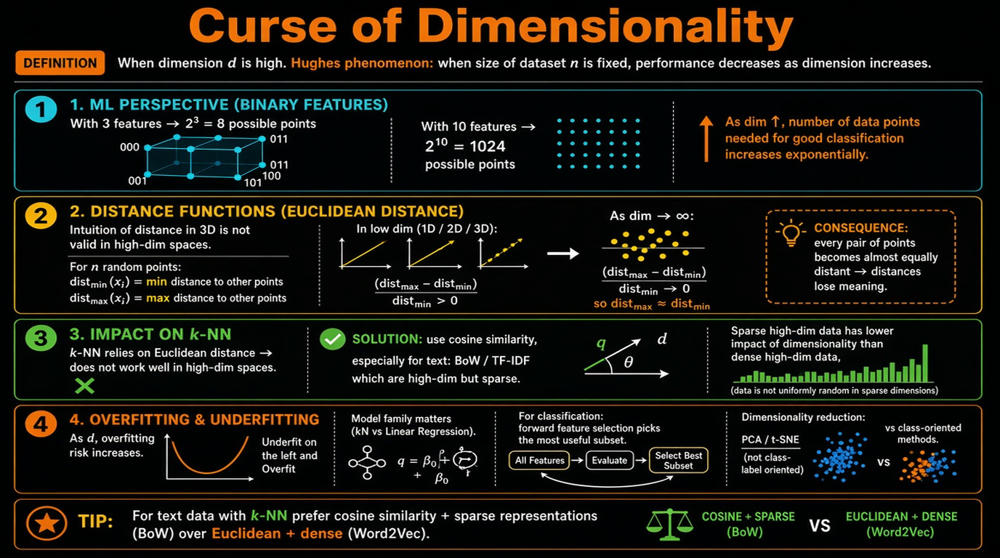
https://en.wikipedia.org/wiki/Curse_of_dimensionality
Curse of Dimensionality
When the number of dimensions $d$ becomes very high, many intuitive properties of data break down. This is known as the Curse of Dimensionality.
1. Exponential Growth of Data Requirement
For binary features:
- 3 features → $2^3 = 8$ possible data points
- 10 features → $2^{10} = 1024$ possible data points
Key Observation:
As dimensionality increases, the number of data points needed to perform good
classification / modeling increases exponentially.
Hughes Phenomenon:
When the size of the dataset is fixed ($n$ is constant), model performance starts
decreasing as dimensionality increases.
2. Distance Functions Break Down (Especially Euclidean)
In low dimensions (1D, 2D, 3D) we have a clear notion of “near” and “far”.
Define for a point $x_i$:
$$ \text{dist-min}(x_i) = \min_{x_j \neq x_i} \text{dist}(x_i, x_j) $$
$$ \text{dist-max}(x_i) = \max_{x_j \neq x_i} \text{dist}(x_i, x_j) $$
In low dimensions:
$$ \frac{\text{dist-max}(x_i) - \text{dist-min}(x_i)}{\text{dist-min}(x_i)} > 0 $$
But as dimension $d \to \infty$:
$$ \lim_{d \to \infty} \frac{\text{dist-max}(x_i) - \text{dist-min}(x_i)}{\text{dist-min}(x_i)} \to 0 $$
Meaning:
In very high dimensions,
$\text{dist-max}(x_i) \approx \text{dist-min}(x_i)$
→ Every pair of points becomes almost equally distant from each other.
→ The concept of “nearest neighbor” loses meaning.
Impact on K-NN
- K-NN relies heavily on Euclidean distance.
- In high-dimensional spaces, Euclidean distance becomes less meaningful.
- Therefore K-NN does not work well in high dimensions.
Common Solutions:
- Use Cosine Similarity instead of Euclidean distance (especially for text data).
- Prefer sparse representations (BoW, TF-IDF) over dense ones (Word2Vec) when dimensionality is extremely high.
Dense vs Sparse High-Dimensional Data
| Type of Data | Impact of High Dimensionality | Reason |
|---|---|---|
| High-dim & Dense | Impact is high | Points are spread everywhere |
| High-dim & Sparse | Impact is lower | Data is not uniformly / randomly spread |
Sparse data (e.g., text with BoW) suffers less from the curse compared to dense random high-dimensional data.
3. Overfitting Increases with Dimensionality
As $d$ increases → model capacity increases → risk of overfitting increases.
Ways to handle this:
- Forward Feature Selection → pick only the most useful subset of features (classification-oriented)
- Dimensionality Reduction (PCA, t-SNE) → not class-label oriented
- Prefer simpler model families when $d$ is large
Practical Advice for Text Data
When applying K-NN on text data:
- Prefer Cosine Similarity over Euclidean distance
- Prefer Sparse representations (BoW / TF-IDF) over dense representations (Word2Vec)
Summary
The Curse of Dimensionality manifests in three major ways:
- Exponentially more data is required
- Distance metrics (especially Euclidean) become less meaningful
- Models tend to overfit more easily
Understanding these effects is crucial when working with high-dimensional data such as text, images, or one-hot encoded categorical features.
18. Bias-Variance Tradeoff
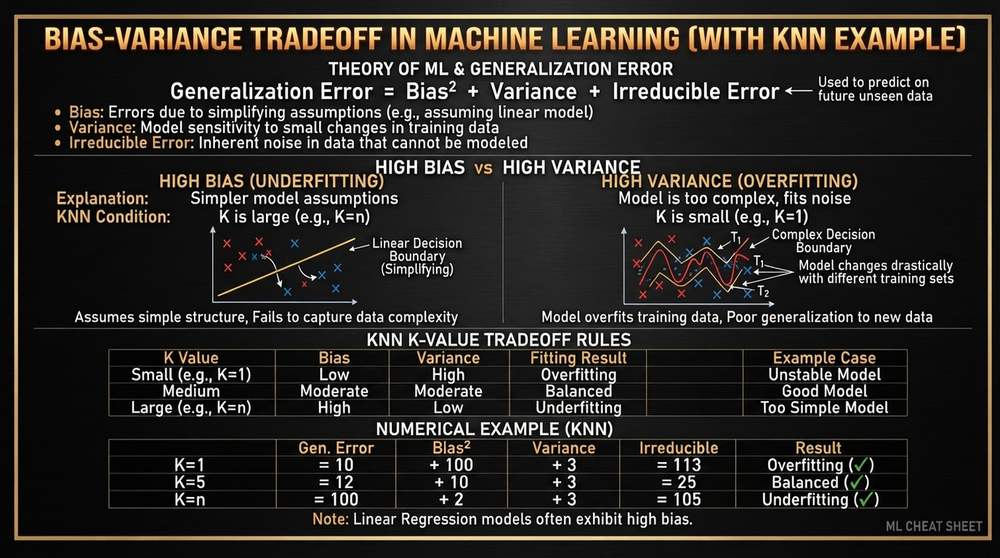
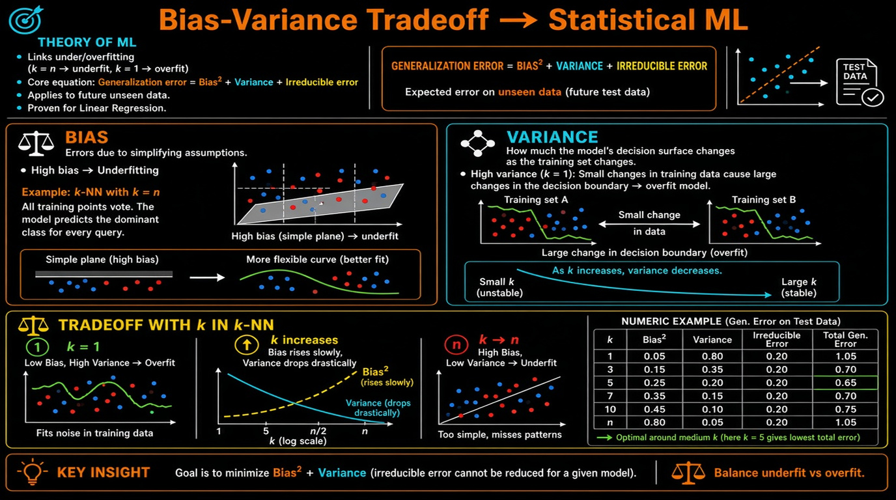
https://en.wikipedia.org/wiki/Bias%E2%80%93variance_tradeoff
Bias-Variance Tradeoff is one of the most important ideas in the Theory of Machine Learning (Statistical ML).
It gives the mathematical basis for understanding Underfitting and Overfitting.
Generalization Error Decomposition
For a model (especially easy to prove for Linear Regression):
$$ \text{Generalization Error} = \text{Bias}^2 + \text{Variance} + \text{Irreducible Error} $$
- Generalization Error = Error on future unseen data
- Irreducible Error = Error that cannot be reduced further for a given model / problem (noise in the data)
1. Bias
Bias = Error due to simplifying assumptions made by the model.
- High Bias → Underfitting
- Classic example in K-NN: when $K = n$ (very large K)
When $K = n$:
- The model always predicts the dominant class in the entire training set
- It ignores the local structure completely
- This is a strong simplifying assumption → High Bias → Underfitting
Visual intuition:
- True decision boundary is a curve
- Model assumes a straight line / plane → simplifying assumption → High Bias
2. Variance
Variance = How much the model (decision surface) changes when the training data changes.
- High Variance → Overfitting
- Classic example in K-NN: when $K = 1$
When $K = 1$:
- Small changes in the training data lead to very different decision surfaces
- The model is extremely sensitive to the training set
- This is High Variance → Overfitting
As $K$ increases:
- Variance decreases
- Bias increases
Bias-Variance Behavior in K-NN
| Value of K | Bias | Variance | Behavior |
|---|---|---|---|
| $K = 1$ | Low | Very High | Overfitting |
| $K$ medium | Balanced | Balanced | Best tradeoff |
| $K = n$ | High | Low | Underfitting |
Numerical Illustration
$$ \text{Gen. Error} = \text{Bias}^2 + \text{Var} + \text{Irreducible Error} $$
Example numbers:
| K | Bias² | Variance | Irreducible | Total Gen. Error | Diagnosis |
|---|---|---|---|---|---|
| K=1 | 10 | 100 | 3 | 113 | Overfit |
| K=5 | 12 | 10 | 3 | 25 | Good |
| K=n | 100 | 2 | 3 | 105 | Underfit |
Key Takeaways
- We cannot simultaneously make Bias and Variance zero.
- There is always a tradeoff.
- The goal is to find the sweet spot where the sum (Bias² + Variance) is minimized.
- This tradeoff is fundamental and appears in almost every model family (K-NN, Linear Regression, Decision Trees, Neural Networks, etc.).
Bias-Variance Tradeoff is the theoretical foundation that explains why we need techniques like cross-validation, regularization, and careful model selection.
19. Intuitive Understanding of Bias-Variance
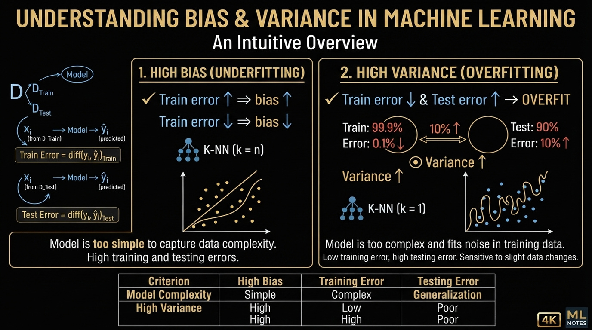
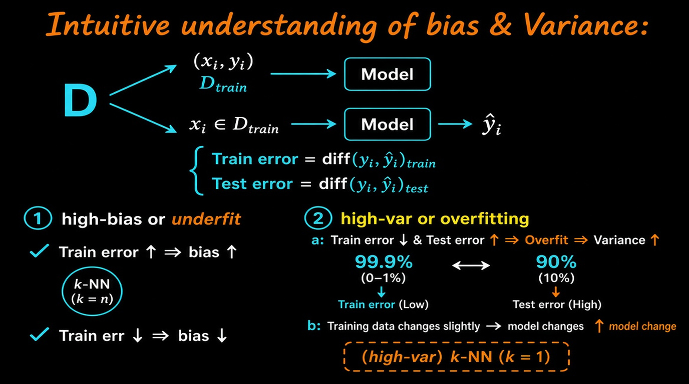
Intuitive Understanding of Bias & Variance
We split the data $D$ into $D_{\text{Train}}$ and $D_{\text{Test}}$.
- Train a model on $D_{\text{Train}}$
- Measure errors on both Train and Test sets
$$ \text{Train Error} = \text{difference}(y_i, \hat{y}_i) \quad \text{on training data} $$
$$ \text{Test Error} = \text{difference}(y_i, \hat{y}_i) \quad \text{on test data} $$
1. High Bias (Underfitting)
Symptoms:
- Train Error is high
- Test Error is also high
Rule of thumb:
- High Train Error → High Bias → Underfitting
Classic example: K-NN with $K = n$
When Train Error is low → Bias is low.
2. High Variance (Overfitting)
Symptoms:
- Train Error is very low
- Test Error is high
Example:
- Train accuracy = 99.9% (error ≈ 0.1%)
- Test accuracy = 90% (error ≈ 10%)
This gap indicates Overfitting (High Variance).
Another intuition:
- Small changes in the training data cause large changes in the model (decision surface)
- Classic example: K-NN with $K = 1$
Quick Diagnostic Table
| Train Error | Test Error | Diagnosis |
|---|---|---|
| High | High | High Bias (Underfit) |
| Low | High | High Variance (Overfit) |
| Low | Low | Good model |
These simple observations from Train vs Test error give a very practical and intuitive way to detect bias and variance problems.
20. Best and Worst Case of Algorithm
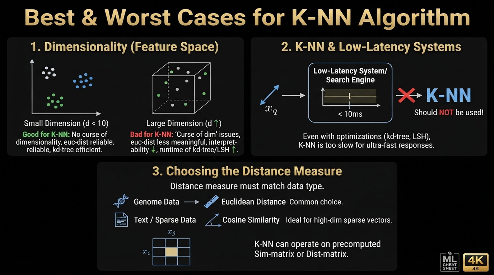
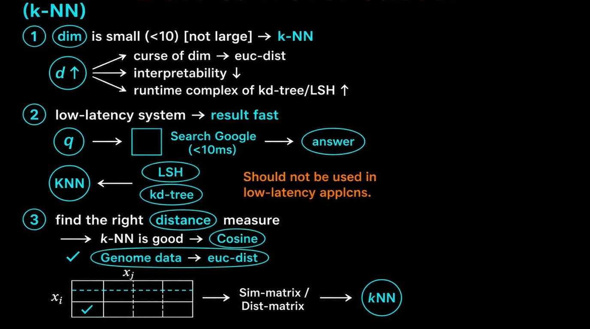
1. Dimensionality
Best case for K-NN:
- Dimensionality $d$ is small ($d < 10$)
When dimensionality increases:
- Curse of dimensionality hurts Euclidean distance
- Interpretability decreases
- Runtime complexity of exact methods (Kd-tree) and approximate methods (LSH) increases
→ K-NN becomes less attractive as $d$ grows large.
2. Latency Requirements
Low-latency systems need results extremely fast (e.g. Google Search < 10 ms).
- Brute-force K-NN is too slow for such applications
- Even with Kd-tree or LSH, K-NN is generally not preferred in strict low-latency production systems
Recommendation:
Avoid K-NN when the application demands very low latency.
3. Choice of Distance / Similarity Measure
K-NN is only as good as the distance (or similarity) measure you use.
Examples:
- Text data → Cosine Similarity works well
- Genome data → Euclidean distance is often suitable
- When only a Similarity matrix or Distance matrix is available → K-NN can still be applied directly
Key point:
Always choose the right distance/similarity measure for the domain. A good distance
measure can make K-NN perform very well; a poor one will make it fail.
Summary: When to Use K-NN
| Situation | Recommendation for K-NN |
|---|---|
| Low dimensionality ($d < 10$) | Good choice |
| High dimensionality | Avoid or use with caution |
| Need very low latency | Avoid |
| Good domain-specific distance | Strong candidate |
| Need high interpretability | Good choice (especially small $K$) |
K-NN shines in low-dimensional problems where interpretability matters and a meaningful distance measure exists.
21. Revision Questions
- What is Imbalanced and balanced dataset?
- Define Multi-class classification?
- Explain Impact of Outliers?
- What is Local Outlier Factor?
- What is k-distance(A), N(A)?
- Define reachability-distance(A, B)?
- What is Local-reachability-density(A)?
- Define LOF(A)?
- Impact of Scale & Column standardization?
- What is Interpretability?
- Handling categorical and numerical features?
- Handling missing values by imputation?
- Bias-Variance tradeoff?
1. What is Imbalanced and balanced dataset?
Balanced dataset: Classes have roughly equal number of samples (e.g., 50-50 for binary classification). Models train well without bias toward any class.
Imbalanced dataset: One or more classes have significantly fewer samples (minority class) than others (majority class). Example: fraud detection (0.1% fraud cases).
Problems: Model becomes biased toward majority class → high accuracy
but poor recall/precision on minority class.
Solutions: Oversampling (SMOTE), undersampling, class weights, ensemble
methods, anomaly detection techniques, collecting more data.
2. Define Multi-class classification?
Multi-class classification is a supervised learning task where the target variable has more than two classes.
Examples:
- Digit recognition (0–9)
- News categorization (sports, politics, tech, …)
- Image classification (cat, dog, bird, car, …)
Approaches:
- One-vs-Rest (OvR)
- One-vs-One (OvO)
- Softmax (multinomial logistic regression, neural nets)
- Algorithms that natively support multi-class (Random Forest, k-NN, Naive Bayes, etc.)
3. Explain Impact of Outliers?
Outliers are data points that differ significantly from the rest of the observations.
Impact:
- Distance-based models (k-NN, k-Means, SVM with RBF kernel) → outliers distort neighborhoods and decision boundaries.
- Linear models (Linear Regression, Logistic Regression) → outliers pull the fitted line/hyperplane strongly (high leverage).
- Statistics → mean and variance become unreliable; median/IQR are more robust.
- Can lead to overfitting or poor generalization.
- May represent rare but important events (fraud, defects) or data errors.
Handling: Detection (Z-score, IQR, Isolation Forest, LOF) + removal / capping / robust models / transformation.
4. What is Local Outlier Factor?
Local Outlier Factor (LOF) is an unsupervised anomaly detection algorithm that measures the local density deviation of a data point with respect to its neighbors.
- A point is considered an outlier if its local density is much lower than the densities of its neighbors.
- LOF score ≈ 1 → similar density (inlier)
- LOF score ≫ 1 → lower density than neighbors (outlier)
It works well for datasets with varying density regions (unlike global methods such as Isolation Forest or simple distance-to-mean).
5. What is k-distance(A), N(A)?
-
k-distance(A): Distance from point A to its k-th nearest neighbor.
Formally: ( k\text{-distance}(A) = d(A, p_k) ) where ( p_k ) is the k-th closest point to A. -
N(A) or ( N_k(A) ): The k-nearest neighborhood of A – the set of all points whose distance from A is ≤ k-distance(A).
(It can contain more than k points if ties exist.)
These are fundamental building blocks of the LOF algorithm.
6. Define reachability-distance(A, B)?
Reachability-distance of point A with respect to point B is:
[ \text{reach-dist}_k(A, B) = \max{ k\text{-distance}(B),\ d(A, B) } ]
Intuition:
- If A is far from B, use the actual distance ( d(A,B) ).
- If A is inside the k-neighborhood of B, “smooth” it by using k-distance(B).
This prevents points that are very close to a dense region from getting artificially low reachability distances.
7. What is Local-reachability-density(A)?
Local Reachability Density (LRD) of point A is the inverse of the average reachability distance of A from its k-nearest neighbors:
[ \text{lrd}k(A) = \frac{|N_k(A)|}{\sum{B \in N_k(A)} \text{reach-dist}_k(A, B)} ]
- High LRD → point lies in a dense region.
- Low LRD → point lies in a sparse region.
8. Define LOF(A)?
Local Outlier Factor of point A is the average ratio of the local reachability densities of A’s neighbors to the local reachability density of A itself:
[ \text{LOF}k(A) = \frac{\sum{B \in N_k(A)} \frac{\text{lrd}_k(B)}{\text{lrd}_k(A)}}{|N_k(A)|} ]
- LOF(A) ≈ 1 → A has similar density to its neighbors (inlier)
- LOF(A) > 1 (typically > 1.5–2) → A is less dense than its neighbors → outlier
9. Impact of Scale & Column standardization?
Impact of different scales:
- Features with larger numeric ranges dominate distance calculations (Euclidean, Manhattan, etc.).
- Affects k-NN, k-Means, SVM, PCA, Gradient Descent, Regularization, etc.
- Can make the model biased toward high-magnitude features.
Column Standardization (Z-score normalization): [ x' = \frac{x - \mu}{\sigma} ]
- Makes every feature mean = 0, std = 1.
- Removes scale differences while preserving distribution shape.
- Preferred when algorithms assume Gaussian-like features or use regularization.
Min-Max Scaling is an alternative when you need values in a fixed range [0,1].
Always apply scaling after train-test split (fit only on train).
10. What is Interpretability?
Interpretability is the degree to which a human can understand the cause of a decision / prediction made by a machine learning model.
- High interpretability: Linear Regression, Logistic Regression, Decision Trees, Rule-based models.
- Low interpretability (black-box): Deep Neural Networks, Gradient Boosting, complex ensembles.
Why it matters:
- Trust & accountability (especially in healthcare, finance, law)
- Debugging & improving models
- Regulatory compliance (GDPR “right to explanation”)
- Domain expert validation
Techniques to improve interpretability of black-box models: SHAP, LIME, Partial Dependence Plots, Feature Importance, attention mechanisms, etc.
11. Handling categorical and numerical features?
Numerical features:
- Scaling / Standardization / Normalization
- Binning (discretization)
- Log / Power transforms for skewed data
- Handling outliers
Categorical features:
- Nominal (no order): One-Hot Encoding, Dummy Encoding, Target Encoding, Embedding
- Ordinal (ordered): Ordinal Encoding, Label Encoding (with care)
- High-cardinality: Frequency Encoding, Hashing, Target Encoding, Embeddings
Mixed data:
- Keep numerical as-is (after scaling) + encode categorical
- Tree-based models (Random Forest, XGBoost, LightGBM) can handle categorical natively (or with simple integer encoding)
- Distance-based models require proper encoding + scaling
12. Handling missing values by imputation?
Imputation = filling missing values with estimated values instead of dropping rows/columns.
Common strategies:
| Strategy | When to use | Pros / Cons |
|---|---|---|
| Mean / Median | Numerical, MCAR | Simple; median more robust to outliers |
| Mode | Categorical | Simple |
| Constant (0, -1, “Missing”) | When missingness is informative | Preserves missing pattern |
| KNN Imputation | Numerical / mixed | Uses local similarity |
| Multivariate (MICE, IterativeImputer) | Complex relationships | More accurate but slower |
| Model-based (Predict missing with another model) | When strong predictors exist | Powerful |
Important:
- Fit imputation only on training data
- Create a missing indicator feature if missingness carries information
- Never impute the target variable for supervised learning
13. Bias-Variance tradeoff?
Bias: Error due to overly simplistic assumptions in the learning
algorithm (underfitting).
Variance: Error due to the model being too sensitive to small
fluctuations in the training data (overfitting).
Trade-off:
- High Bias + Low Variance → Underfitting (simple models: linear regression on non-linear data)
- Low Bias + High Variance → Overfitting (very deep trees, high-degree polynomials)
- Goal: Find the sweet spot with low total error = Bias² + Variance + Irreducible error
How to control:
- Increase model complexity → ↓ Bias, ↑ Variance
- Regularization, more data, cross-validation, ensemble methods, early stopping → reduce variance
- Feature engineering, better algorithms → reduce bias
This is one of the most fundamental concepts in machine learning model selection.